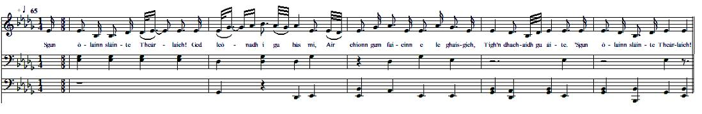

Deoch-slàinte Theàrlaich
The Health of Charlie - A la santé de Charles
by Alexander MacDonald (Alastair Mac Mhaighstir Alastair) c.1700 - c.1770.
Source of the text:"Eiseirigh na seann chanain Albannaich" no "An nuadh oranaiche Gaidhealach", Ed. 8. le Alastair Donullach, (Mac Mhaighistir Alastair):
"Revival of the old Alban tongue" or, "The new Gaelic songster", by Alexander Mcdonald, published 1892 by Grant in Edinburgh. Written in Scottish Gaelic.
Tune
'S gun Òlainn Slàinte Theàrlaich

|
To the tune
As sung by Rev. William Matheson in Edinburgh. Track kept in the collection of the School of Scottish Studies. (Permanent Link: //www.tobarandualchais.co.uk/fullrecord/18923/1). This tragic pentatonic melody violently contrasts with the martial message conveyed by the lyrics: a bacchanalian song and an incitement to Prince Charles to resume the rebellion after Culloden, embodying a list of seven clans who would follow him, should he return to take "his rightful place", as stated in a letter received on the foregoing Sunday. |
A propos de la mélodie
C'est la version qu'en donna le Rév. William Matheson à Edimbourg lors d'un enregistrement conservé par la School of Scottish Studies (Lien permanent: //www.tobarandualchais.co.uk/fullrecord/18923/1). Cette mélodie pentatonique aux accents de marche funèbre contraste de façon saisissante avec les paroles martiales de ce chant bachique qui invite le Prince Charles à reprendre les hostilités, après avoir énuméré 7 clans rescapés de Culloden qui seraient prêts à le suivre, à en croire une lettre reçue le dimanche précédent. |

|
THE HEALTH OF CHARLIE
by Alexander McDonald CHORUS I'll drink the health of Charlie, However sad I may be, Bearing in mind all those who find He should to his due place hurry. I'll drink the health of Charlie! 1. Beyond all expectation Last Sunday information Came from cassock-men who were shocked By our Chief's isolation. I'll drink the health of Charlie! 2. Clan Donald of the mount heath Whom Fame so often did wreath, Who could afford to see your sword Which stays away in its sheath? I'll drink the health of Charlie! 3. With Donald Ban of Lochy Strong, gallant men are plenty, With dark-blue blades that throw grey shades, They used to chop flesh fiercely. I'll drink the health of Charlie! 4. Fair Ewen of Cluny's brave lads, To cut off lugs will be glad With sharp knives into flesh they drive, But now drop their heads. Too bad! I'll drink the health of Charlie! 5. So many a gallant youngster In a new host would muster: It's blood and gore you're looking for, Braedalbane's proud McGregor! I'll drink the health of Charlie! 6. MacShimy Og of Fraser, - Fierce lion to each contender - He is the lord of a wild horde Who spread the place all over. I'll drink the health of Charlie! 7. And Chisholm of the sharp blade In haste will offer his aid: His anger's plain. He never feigns. Destroying all, that's his trade. I'll drink the health of Charlie! 8. Mackintosh, royal fighter, Who never will surrender, You split the necks, now what the heck? But don't suffer bad manners! I'll drink the health of Charlie! 9. O Charles the crown you shall win! No waxen candles reeking: A flaming torch above each porch And everywhere loud cheering! I'll drink the health of Charlie! Transl. Christian Souchon (c) 2015 |
DEOCH-SLAINTE THEARLAICH
le Alastair Donullach FONN. — 'S gun òlainn slàinte-Theàrlaich, Ged leònadh i gu bàs mi, Air chionn gum faicinn e le ghaisgich, Tigh'n dhachaidh gu àite. 'S gun òlainn slàinte-Theàrlaich, 1. An litir ghluais mo dhòchas, A dh' fhiosraich mi Didònaich, Gu'n d' thug sibh bristeadh air luchd-chasag [1] Dh' fhàg sibh lag gun treòir iad. 'S gun òlainn slàinte-Theàrlaich! 2. Clann-Dònuill chruaidh nam fraoch-bheann, [2] A choisinn buaidh 's a' chaonnaig, Gur fada chluinnteadh fuaim ur cruadhach Tigh'n romh thruaillean caola. 'S gun òlainn slàinte-Theàrlaich! 3. 'S leat Dònull bàn bho Lòchaidh, [3] Le fhir làidir chròdha, 'S le lannan glasa, dùbh-ghorm, sgaiteach, 'S math gu casgairt feòla. 'S gun òlainn slàinte-Theàrlaich! 4. 'S leat Eòghan bàn bho Chluainidh, [4] 'S bu mhath gu sgaradh chluas diubh Le sgianan biorach, dheanadh pinneadh, Dh' fhàgadh 'sileadh chnuac iad. 'S gun òlainn slàinte-Theàrlaich! 5. Gur h-iomad òigear meanmnach, A dh' éireadh leat fo 'n armaibh; Bu neo-ghliogach dol 's an trioblaid — Griogaraich Bhraid-Albann. [5] 'S gun òlainn slàinte-Theàrlaich! 6. Mac-Shimidh òg bho 'n Aird leat, [6] Mar leòghann ri uchd nàmhad, Le fhir dhearga, smiorail, fheargach, Leagadh mealg mu sàiltean. 'S gun òlainn slàinte-Theàrlaich! 7. 'S leat Siosalaich nan géur-lann. [7] Théid sgiobalta 'n an éideadh; Bidh ruinn gu ceilg orra 'n teas na feirge Dh' fhàgadh earblaich créuchdach. 'S gun òlainn slàinte-Theàrlaich! 8. Tha Clann-an-Tòisich rìoghail, [8] Na leòghanna nach strìochdadh, Le lannan guineach, sgoltadh mhuineal, 'S iad nach fuilig mì-mhodh. 'S gun òlainn slàinte-Theàrlaich! 9. 'N uair théid an crùn air Tèarlach, Bidh smùid air coinnlean-céire; Bidh lasair ait air bàrr gach caisteil, 'S dhibh gu bras 'g a h-éigheach. 'S gun òlainn slàinte-Theàrlaich. |
A LA SANTE DE CHARLES
par Alexandre McDonald REFRAIN A la santé de Charles! Même la mort dans l'âme, Je pense aux preux qui font le vœu Qu'il ranime la flamme. A la santé de Charles! 1. Dépassant mes attentes, Une lettre, dimanche, D'un porte-casaque clamait Combien ce chef nous manque. A la santé de Charles! 2. Donald à la Bruyère Victorieux à la guerre S'impatientait de dégainer Comme il le fit naguère. A la santé de Charles! 3. Donald de Lochy mène Un tas d'énergumènes Aux lames grises qu'ils aiguisent Dans la chair humaine. A la santé de Charles! 4. Ewan de Cluny veille, Ce grand coupeur d'oreilles, Ce champion du couteau pointu, Sa hargne est sans pareille. A la santé de Charles! 5. Des cohortes entières Rejoindraient la bannière: Et frapper fort, les MacGregor De Braedalbane savent faire. A la santé de Charles! 6. Fraser d'Aird, son jeune âge En fait un lion en cage, Comme le sont ses compagnons Avides de carnage. A la santé de Charles! 7. Chisholm, la fine lame, Preste, prendrait les armes. Quand sa colère on exaspère, Ce n'est que ruines et larmes. A la santé de Charles! 8. Chattan, royale race De lions qu'on ne terrasse Jamais. Des fous, coupeurs de cous, Mais toujours avec classe! A la santé de Charles! 9. Des vivats pêle-mêle! Qu'on troque ces chandelles Pour des flambeaux sur nos châteaux! Un triomphe t'appelle! A la santé de Charles! Trad. Christian Souchon (c) 2015 |
|
[1]
Luchd-chasag
: "cassock wearer". Either "Lowlander", or Highlander on whom this garment was imposed by the "Disclothing Act" which went into effect on 1st August 1747. "Cassock" was the term used for the long coat as worn by the Lowlanders and English, as compared with the "côtta gearr" or short coat that formed part of the Highland dress.
[2] Fraoch-bheann : (or fraoch gorm), "common heath" is the badge of Clan Donald . [3] Dònull Bàn (Mac Dhomhnuill Dhuibh): Donald Ban Son of Donald Dubh, Laird of Lochiel (1695 -1748), Chief of Clan Cameron , whose name has descended to us under the title of "the gentle Lochiel". The original possessions of the Cameron were on the east side of the river and the loch of Lochy . Gentle Lochiel's mansion, Achnacarry was burnt in 1746, when the country was wasted after Culloden. Sir Donald was badly wounded but could escape with the Prince to France in October 1746. He never returned to Scotland. He died in Bergues on 26 October 1748 and is buried in Bergues cemetery. It is evident that Alexander McDonald wrote his poem before this date. [4] Eòghan bàn bho Chluainidh : Ewan son of Lachlan was the famous Cluny McPherson , a staunch supporter of Charlie. He was the chief of the Clan Chattan (instead of Angus McKintosh - see [7]) at the time of the Jacobite Rising of 1745. After the Rebellion, he went into hiding. He escaped to France in 1765 and died soon afterwards. With the help of the famous James McPherson, the "translator" of the Ossian cycle of poems, the Cluny estate was recovered by Duncan McPherson, son of Ewan, in 1784. During part of his long years as a fugitive (1746- 1765), Cluny is believed to have retained control over the Jacobite treasure of Loch Arkaig . He had remained in hiding in his Highland "cage" for the eight years following Culloden. Then he was unjustly accused of embezzlement by Charles who sent Archibald, Lochiel's brother to Scotland to locate the treasure. [5] Griogaraich Bhraid-Albann : McGregor of Braedalbane. There was a long lasting feud (1562 - 1570) for control over the lands of Breadalbane and Lorne between the McGregors of Glenstrae and the Campbells of Glenorchy which resulted in Chief Gregor Red McGregor being captured, tried and sentenced to death. Breadalbane was the home of the Roro McGregors whose "slogan" was "Tae Hell wi' the earl o' Breadalbane" (a Campbell). [6] Mac-Shimidh òg bho 'n Aird : Young Mac Shimidh (patronymic for Lord Fraser of Lovat) of the Aird. The here addressed Fox's son , Simon Fraser (1726–1782), escaped punishment, and was pardoned – later raising a Fraser regiment for the British army which fought in Canada in the 1750s, including Quebec. He was granted some of the forfeited Lovat estates by an Act of Parliament in recognition of his military service to the Crown and the payment of some £20,000. [7] Siosalaich nan géur-lann : "Chisholm with the sharp blade". During the Jacobite rising of 1745, Chief Roderick supported the Jacobites. His son Roderick led the clan at the Battle of Culloden, leading a very small regiment of about 80 men, where he was killed along with 30 clansmen. Two of Roderick's other sons James and John were Captains in Cumberland's army. The poem should refer to Alexander Chisholm, 22nd chief of Chisholm . [8] Clann-an-Tòisich rìoghail: "Royal Clan McKintosh". Angus MacKintosh, 22nd chief, held a commission in the British Black Watch regiment, whereas his clan supported the Jacobite cause under the leadership of his wife, Lady Anne. He was not with his clansmen who fought as Jacobites at the Battle of Culloden. His half-hearted support to King George might be the reason why he is quoted in this list of potential Jacobite supporters. |
[1]
Luchd-chasag
: "porteur de casaque". Désigne soit un "Lowlander", ou un Highlander à qui ce vêtement fut imposé par le "Disclothing Act" qui entra en vigueur le 1er août 1747. "Casag" était le terme utilisé pour la redingote portée par les Lowlanders et les Anglais, par opposition au "côtta gearr" ou manteau court qui faisait partie du costume des Highlands.
[2] Fraoch-bheann : (ou fraoch gorm), "bruyère commune" est le "badge" (insigne de reconnaissance) du Clan Donald . [3] Dònull Bàn (Mac Dhomhnuill Dhuibh): Donald le Pâle fils de Donald le Brun, seigneur de Lochiel (1695 -1748), Chef du Clan Cameron , qui nous est connu aujourd'hui comme "Lochiel le Gentilhomme". Les terres d'origine des Cameron s'étendaient sur la rive est de la rivière et du lac Lochy . La résidence de Lochiel, Achnacarry fut brûlée en 1746, quand la région fut mise à sac après Culloden. Sir Donald fut gravement blessé mais réussit à se réfugier en France avec le Prince en octobre 1746. Il ne devait jamais rentrer en Ecosse. Il mourut à Bergues le 26 octobre 1748 et c'est au cimetière de Bergues qu'il repose. Il est évident qu'Alexandre McDonald composa son poème avant cette date. [4] Eòghan bàn bho Chluainidh : Ewan fils de Lachlan était le fameux Cluny McPherson , un fidèle partisan de Charles. Il fit office de chef du Clan Chattan (en lieu et place d' Angus Mackintosh - cf. [7]) pendant le soulèvement jacobite de 1745. Après la rébellion, il prit le maquis. Il se réfugia en France en 1765 où il mourut peu après. Grâce à l'intervention du fameux James Macpherson, le "traducteur" du cycle d'Ossian, les terres de Cluny furent restituées à Duncan Macpherson, le fils dudit Ewan, en 1784. Pendant une partie de sa longue clandestinité (1746- 1765), on pense que Cluny avait la mainmise sur le trésor Jacobite du Loch Arkaig . C'est l'époque où il resta caché dans sa "cage" des Highlands, huit années durant après Culloden. Puis il fut accusé à tort de détournement par Charles qui envoya en Ecosse Archibald, le frère de Lochiel, afin de localiser ce trésor. [5] Griogaraich Bhraid-Albann : "MacGregor de Braedalbane". Il y eut un long différend (1562 - 1570) à propos de la suzeraineté des terres de Breadalbane et de Lorne entre les MacGregor of Glenstrae et les Campbell de Glenorchy. Il s'acheva par l'arrestation, le jugement et la condamnation à mort du chef Gregor McGregor dit "Le Roux". Breadalbane était le pays de la famille de Roro McGregor dont le "slogan" était "Au diable le comte de Breadalbane" (un Campbell). [6] Mac-Shimidh òg bho 'n Aird : "Le jeune "fils de Simon" (nom patronymique désignant Lord Fraser de Lovat) de l'Aird. Le fils du "Renard" dont on parle ici, Simon Fraser (1726–1782), échappa aux poursuites et fut réhabilité – il devait créer plus tard le Régiment Fraser qui, au sein de l'armée britannique, combattit au Canada dans les années 1750, en particulier au Québec. Une loi votée par le parlement lui attribua certaines des terres des Lovat qui avaient été confisquées, en reconnaissance des services qu'il avait rendus à la Couronne, ainsi qu'une dotation de 20,000 livres environ. [7] Siosalaich nan géur-lann : "Chisholm à la lame tranchante". Pendant le soulèvement de 1745, le Chef Rodéric soutint les Jacobites. Son fils, nommé Rodéric lui aussi, commandait le clan à Culloden, un minuscule régiment d'environ 80 hommes, et il fut tué avec 30 de ses compagnons. Deux autres fils de Rodéric, James et John étaient capitaines dans l'armée de Cumberland. Il semblerait que le poème vise Alexander Chisholm, 22ème chef des Chisholm . [8] Clann-an-Tòisich rìoghail: Le "Royal Clan MacKintosh". Angus Mackintosh, 22ème chef, fut chargé de prendre la tête du régiment de la Garde Noire Britannique, tandis que son clan soutenait la cause Jacobite, sous le patronage de son épouse, Lady Anne. Il n'était donc pas avec son clan lors de la bataille de Culloden. Le soutien mitigé qu'il accorda à la cause hanovrienne pourrait expliquer qu'il soit cité sur cette liste de partisans possibles d'un nouveau soulèvement. |